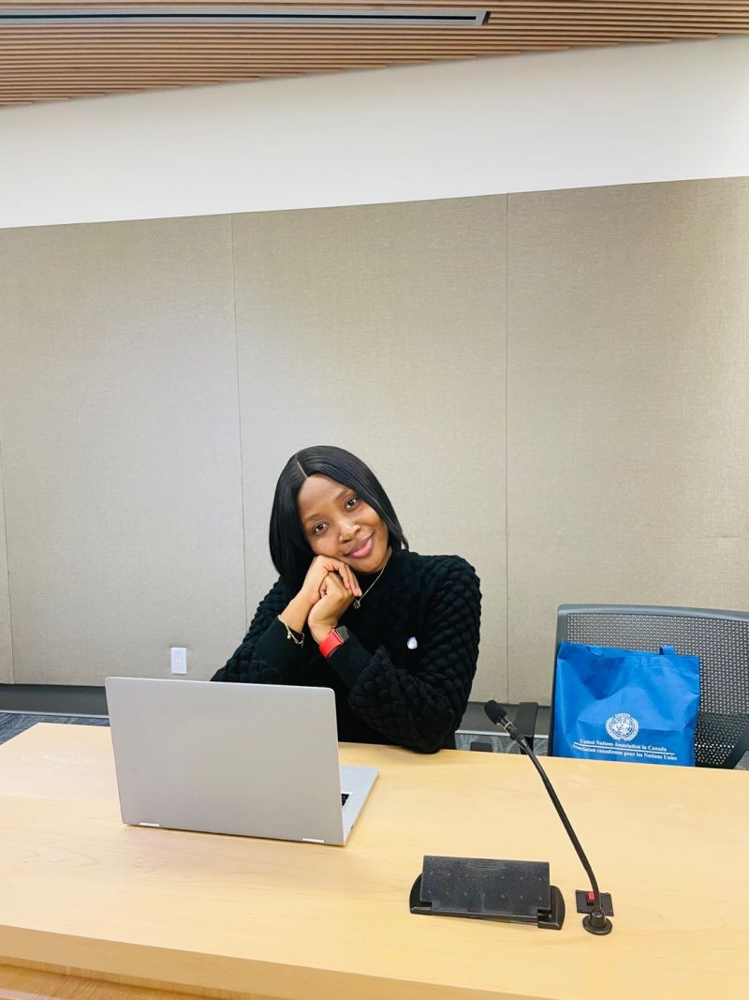

01 / Healthcare
Connecting people
to better care.
Healthcare improvement work across primary care access, care navigation, cancer screening and community partnerships.
Pharmacist · Healthcare professional · Mentor
I bring people, evidence and systems together to improve healthcare and help others navigate their professional journeys.

A little about me
I’m Anu, a pharmacist, healthcare project professional, researcher and mentor based in Canada.
From pharmacy practice in Nigeria to graduate research at UBC and healthcare improvement in Toronto, my work has followed a common thread: making complex systems work better for the people who depend on them.
Read my story ↗Mentorship, with intention
Career growth can bring unfamiliar questions, especially when you’re entering a new professional environment or considering a change in direction.
I’m interested in supporting people as they build confidence, find clarity and take their next professional step.
Mentorship arrangements are being developed. Share your interest to begin the conversation.
Work & impact
A selection of the areas that shape my work.
01 / Healthcare
Healthcare improvement work across primary care access, care navigation, cancer screening and community partnerships.
02 / Research
Graduate research at UBC exploring social and care networks among older adults, with work published in the Canadian Journal on Aging.
03 / Community
Youth engagement, leadership and community work, including experience with the United Nations Association in Canada.
Speaking & conversations
I bring a multidisciplinary perspective to conversations about healthcare, leadership and professional growth.
Healthcare improvement & project management
Research, community health & equity
Mentorship, leadership & career transitions

Let’s connect
Explore mentorship or invite me into a conversation with your community.